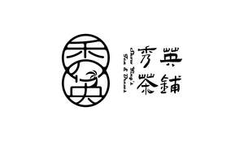

Trade Mark Journal No.2026/003 16 January 2026
UK00004316472 28 December 2025 (30,43)

- Class 30
- Tea; Coffee; Iced tea; Tea (Iced -); Chai tea; Iced coffee; Black tea [English tea]; Tea pods; Chocolate coffee; Decaffeinated coffee; Tea beverages; Oolong tea [Chinese tea]; Tea bags for making non-medicated tea; Tea cakes; Chamomile tea; Tea beverages with milk; Coffee drinks; Flavoured coffee; Caffeine-free coffee; Jasmine tea; Tea bags; Oolong tea; Herbal tea; Green tea; Black tea; Ginger tea; Coffee bags; Coffee extracts for use as substitutes for coffee; Barley tea; Coffee beverages with milk; Coffee beverages; Coffee beans; Instant Oolong tea; Instant tea; White tea; Tieguanyin tea; Buckwheat tea; Aerated drinks [with coffee, cocoa or chocolate base]; Malt coffee; Instant green tea; Beverages with tea base; Beverages with a tea base; Ginseng tea; Instant black tea; Fermented tea; Drip bag coffee; Instant white tea; Yellow tea; Ice beverages with a coffee base; Coffee, teas and cocoa and substitutes therefor; Coffee extracts; Freeze-dried coffee; Beverages with coffee base; Coffee flavourings; Lime tea; Flavourings of tea; Roasted barley tea; Mixtures of coffee essences and coffee extracts; Tea extracts; Tea mixtures; Tea leaves; Coffee in brewed form; Citron tea; Coffee essence; Roasted brown rice tea; Sugar-coated coffee beans; Coffee based drinks; Roasted barley tea [mugicha]; Herb tea [infusions]; Malt coffee extracts; Red ginseng tea; Lime blossom tea; Coffee capsules, filled.
- Class 43
- Coffee shops; Tea rooms.
Proinvesta Limited